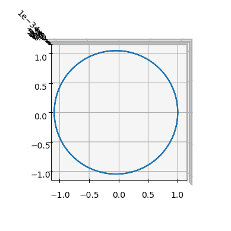
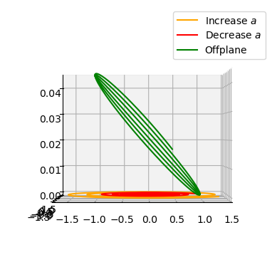

The Zero Hold simple sail dynamics#
In this notebook we birefly instantiate and plot some trajectories for the dynamics of a simple solar sail, provided in pykep.ta.zoh_ss.
As detailed in the documentation, the dynamics (non dimensional) is:
where the acceleration \(\mathbf a_{ss}\) due to the solar sail is: $\( \mathbf a_{ss} = T \left(\cos\alpha \mathbf i_R + \sin\alpha\sin\beta \mathbf i_T + \sin\alpha\cos\beta \mathbf i_N\right) \)$
and: $\( T = c (1. / r^2) \cos^2\alpha \)$
where \(c = 2 \frac{AC}m\) is the characteristic acceleration of a sail having area \(A\), mass \(m\) and in a star system characterized by a flux \(C\).
The non-dimensional units are such that \(\mu=1\) and \(r_0=1\), \(r_0\) being the characteristic radius where \(C\) is given.
The sail orientation angles \(\alpha\) and \(\beta\) are called cone and clock angles.
# our stuff
import pykep as pk
import heyoka as hy
# their stuff
import numpy as np
# plotting
import matplotlib.pyplot as plt
%matplotlib inline
System definition#
Let us start by importing the orbital propagators for the simple solar sail dynamics:
# We get the Taylor adaptive integrator for the simple sail (zero-hold) dynamics
ta = pk.ta.get_zoh_ss(tol=1e-16)
We then use as test case the GTOC13 Altaira system and the parameters of the sailcraft that was defined in the context of the JPL driven competition:
# We define our units
MU = 139348062043.343e9 # this is the MU of the ALTAIRA star
L = 149597870.691e3 # this is the reference radius (1AU) where th Altaira flux is given
V = np.sqrt(MU / L)
TIME = L / V
ACC = V / TIME
MASS = 500
# These are the sail physical characteristics
SAIL_C = 5.4026e-6 # in N/m^2
SAIL_A = 15000 # in m^2
SAIL_MASS = 500 # in kg
We may then compute the system parameter \(c\) (sail characteristic acceleration):
c = (2 * SAIL_C * SAIL_A / SAIL_MASS) / ACC
and assign it to the integrator.
ta.pars[2] = c
#
Simulating with no sail acceleration#
When the cone angle \(\alpha\) is \(\pm \frac{\pi}2\) the sail acceleration is null an one recovers a ballistic trajectory.
# Setting the sail orientation (the clock angle is here irrelevant, so we do not set it)
ta.pars[0] = np.pi / 2
# Defining the initial spacecraft state (circular orbit)
ta.time = 0
ta.state[:] = [1.0, 0, 0, 0, 1.0, 0]
tgrid = np.linspace(0, 4 * np.pi, 1000)
# Propagating
sol = ta.propagate_grid(tgrid)[-1]
… and we plot the result, which shows, indeed a perfectly circular orbit!
ax = pk.plot.make_3Daxis()
ax.plot(sol[:, 0], sol[:, 1], sol[:, 2])
ax.view_init(90, -90)

Simulating some sail action#
# Setting the sail orientation to maximally increase semimajor axis
ta.pars[:2] = [np.arctan(1 / np.sqrt(2)), np.pi / 2]
# Defining the initial spacecraft state (circular orbit)
ta.time = 0
ta.state[:] = [1.0, 0, 0, 0, 1.0, 0]
tgrid = np.linspace(0, 6 * np.pi, 10000)
# Propagating
sol_smap = ta.propagate_grid(tgrid)[-1]
# Setting the sail orientation to maximally decrease semimajor axis
ta.pars[:2] = [np.arctan(1 / np.sqrt(2)), -np.pi / 2]
ta.time = 0
ta.state[:] = [1.0, 0, 0, 0, 1.0, 0]
sol_smam = ta.propagate_grid(tgrid)[-1]
# Setting the sail orientation to maximally increase inclination
ta.pars[:2] = [np.arctan(1 / np.sqrt(2)), 0.0]
ta.time = 0
ta.state[:] = [1.0, 0, 0, 0, 1.0, 0]
sol_smai = ta.propagate_grid(tgrid)[-1]
ax = pk.plot.make_3Daxis()
ax.plot(sol_smap[:, 0], sol_smap[:, 1], sol_smap[:, 2], "orange", label="Increase $a$")
ax.plot(sol_smam[:, 0], sol_smam[:, 1], sol_smam[:, 2], "red", label="Decrease $a$")
ax.plot(sol_smai[:, 0], sol_smai[:, 1], sol_smai[:, 2], "green", label="Offplane")
ax.view_init(0, -90)
ax.legend()
<matplotlib.legend.Legend at 0x7fd4e5087b60>
